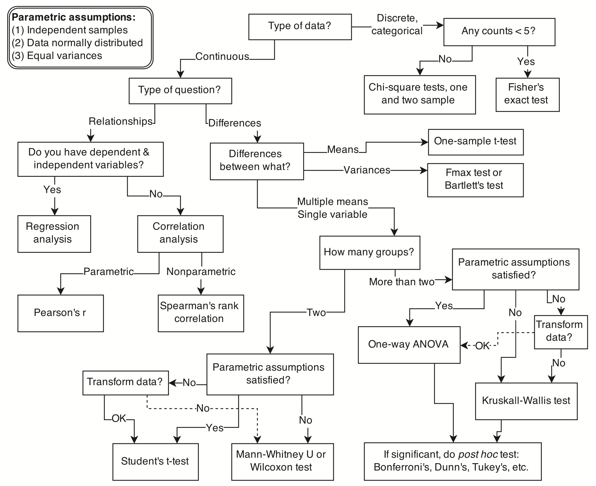
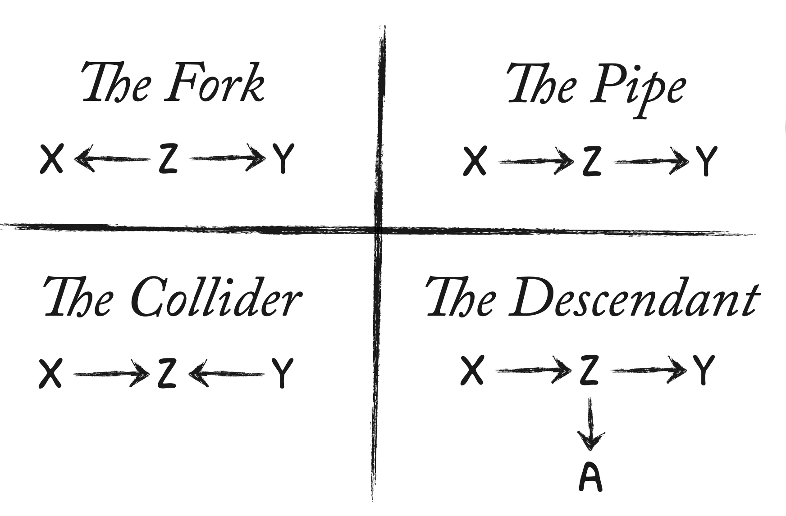

import numpy as np
import pandas as pd
from matplotlib import pyplot as plt
import seaborn as sns
from scipy import stats
import arviz as az
import graphviz16 Causalità dai dati osservazionali
Prerequisiti
- Leggere Causal design patterns for data analysts (Riederer 2021)
- Questo post sul blog fornisce una panoramica di diversi approcci per fare affermazioni causali dai dati osservazionali.
- Leggere BNT162b2 mRNA Covid-19 Vaccine in a Nationwide Mass Vaccination Setting (Dagan et al. 2021)
- Questo articolo confronta le conclusioni causali tratte dai dati osservazionali con quelle di un trial randomizzato.
- Leggere The Effect: An Introduction to Research Design and Causality (Huntington-Klein 2021)
- Concentrarsi sui capitoli 18 “Difference-in-Differences”, 19 “Instrumental Variables” e 20 “Regression Discontinuity”, che forniscono una panoramica di tre approcci chiave per fare affermazioni causali dai dati osservazionali.
- Leggere Telling Stories with Data (Alexander 2023)
- Concentrarsi sul capitolo 15 “Causality from observational data”.
Concetti e competenze chiave
- Non è sempre possibile condurre un esperimento, ma possiamo utilizzare vari approcci per parlare comunque di causalità in una certa misura.
- Dobbiamo fare attenzione ai paradossi comuni, tra cui il paradosso di Simpson e il paradosso di Berkson, ed essere consapevoli sia delle potenzialità che dei limiti del matching.
- Dobbiamo anche essere consapevoli dei quattro confondenti di base: la catena, la biforcazione, il collider e il discendente.
- In generale, le inferenze derivanti dai dati osservazionali devono essere utilizzate con umiltà e attenzione per le debolezze e le assunzioni, sia quelle che possiamo testare sia quelle che non possiamo.
Preparazione del Notebook
%config InlineBackend.figure_format = 'retina'
RANDOM_SEED = 42
rng = np.random.default_rng(RANDOM_SEED)
az.style.use("arviz-darkgrid")16.1 Introduzione
Per assicurare l’integrità e la validità scientifica dei modelli statistici, è essenziale abbinarli a un’analisi causale. La pura osservazione dei dati può rivelare correlazioni e pattern nei dati, ma senza un’indagine sulle cause che stanno dietro a queste correlazioni, le conclusioni tratte possono essere fuorvianti o incomplete.
Anche nell’ambito di una discussione sull’analisi descrittiva dei dati (e, forse, soprattutto in un tale contesto), è importante sottolineare le limitazioni di un tale approccio. L’aspetto cruciale da tenere a mente è che le cause dei fenomeni non possono essere inferite solamente dall’analisi dei dati. Né dall’analisi descrittiva dei dati che stiamo discutendo adesso, né dall’analisi inferenziale dei dati che discuteremo in seguito. Pertanto, per giungere ad una comprensione dei fenomeni è necessario integrare il processo di modellazione statistica con una comprensione delle cause sottostanti del fenomeno oggetto d’esame. In altre parole, per una comprensione scientificamente valida, è necessario combinare la modellazione statistica con l’analisi causale.
In questo capitolo, ci concentreremo sull’introduzione dei concetti fondamentali dell’analisi causale, i quali costituiscono una base cruciale per l’interpretazione dei dati. Cominceremo con la distinzione tra correlazione e causalità. La correlazione indica una relazione tra due variabili, mettendo in evidenza la loro forza e direzione, mentre la causalità implica un legame di causa ed effetto tra le variabili. È di importanza cruciale comprendere che il fatto che due variabili siano correlate non implica automaticamente l’esistenza di un rapporto causale tra di esse. Il noto principio “correlazione non implica causalità” sottolinea questa distinzione critica. Numerosi esempi di correlazioni che non sono basate su una relazione causale diretta possono essere esaminati sul sito spurious correlations.
Oltre a questo concetto fondamentale, procederemo ad esplorare una serie di concetti introdotti da Judea Pearl nel suo testo “Causality” (Pearl 2009). Questi concetti sono essenziali per descrivere le relazioni tra variabili. Essi includono strutture di relazione come biforcazioni, catene, collider e strutture discendenti. Questa cornice concettuale ci permetterà di distinguere tra i diversi tipi di legami causali tra le variabili, ponendo così le basi per condurre un’analisi dei dati più completa e accurata.
Mediante esempi numerici, dimostreremo l’importanza dei fattori confondenti nell’analisi della correlazione e della covarianza. Questo passo ci condurrà oltre l’analisi delle relazioni bivariate di base, introducendoci alle dinamiche più complesse che regolano le relazioni tra le variabili.
16.2 Inferenza Causale
L’inferenza causale si pone l’obiettivo di rappresentare il processo sottostante a un fenomeno, permettendo di prevedere gli effetti di un intervento. Oltre a prevedere le conseguenze di una causa, consente di esplorare scenari controfattuali, immaginando gli esiti alternativi che si sarebbero verificati con decisioni diverse. Questo tipo di ragionamento è cruciale sia in contesti descrittivi che inferenziali.
McElreath (2020) utilizza l’analogia dei Golem, potenti ma privi di saggezza e previsione, per descrivere un approccio limitato che è stato a lungo lo standard in psicologia. Questo approccio si concentra sul semplice test delle ipotesi nulle e non stabilisce una relazione chiara tra le problematiche causali della ricerca e i test statistici. Tale limitazione è stata identificata come una delle principali cause della crisi di replicabilità dei risultati nella ricerca psicologica (si veda il capitolo {ref}generalizability-crisis-notebook) e, di conseguenza, della crisi della psicologia stessa.

Un problema evidenziato da McElreath (2020) è che processi causali completamente distinti possono generare la stessa distribuzione di risultati osservati. Pertanto, un approccio focalizzato esclusivamente sul test dell’ipotesi nulla non è in grado di distinguere tra questi diversi scenari. Questa limitazione è dimostrata numericamente nel capitolo {ref}causal-inference-notebook.
Il test dell’ipotesi nulla, ovvero l’approccio frequentista, nonostante sia stato ampiamente utilizzato in psicologia per decenni, ha mostrato una bassa sensibilità nel rilevare le caratteristiche cruciali dei fenomeni studiati e un alto tasso di falsi positivi (Zwet et al. 2023).
La ricerca scientifica richiede una metodologia più sofisticata rispetto all’approccio che si limita a confutare ipotesi nulle. È essenziale sviluppare modelli causali che rispondano direttamente alle domande di ricerca. Inoltre, è fondamentale avere una strategia razionale per l’estrazione delle stime dei modelli e per la quantificazione dell’incertezza associata ad esse. In questo contesto, l’analisi bayesiana dei dati emerge come un approccio altamente efficace. Anche se in analisi semplici le differenze rispetto all’approccio frequentista potrebbero sembrare minime o addirittura introdurre alcune complicazioni, quando ci si trova ad affrontare analisi più realistiche e complesse, la differenza diventa sostanziale.
16.2.1 Passaggi Chiave per un’Analisi Causale
Per condurre un’analisi scientifica dei dati che superi l’approccio “amatoriale” frequentista, McElreath (2020) suggerisce di seguire una serie di passaggi chiave:
- Comprendere il concetto teorico del fenomeno oggetto dell’analisi.
- Sviluppare modelli causali che descrivano accuratamente le relazioni tra le variabili coinvolte nel problema di ricerca, basandosi sulla teoria sottostante.
- Formulare modelli statistici appropriati che riflettano fedelmente il contesto scientifico e le relazioni causali identificate.
- Eseguire simulazioni basate sui modelli causali per verificare se i modelli statistici sviluppati siano in grado di stimare correttamente ciò che è teoricamente atteso. Questa fase di verifica è cruciale per garantire la validità dei modelli.
- Condurre l’analisi dei dati effettivi utilizzando i modelli statistici sviluppati, avendo la fiducia che riflettano accuratamente le teorie sottostanti e le relazioni causali.
16.2.2 Grafi Aciclici Direzionati (DAG)
Un elemento chiave sottolineato da McElreath (2020) nel processo di analisi è l’utilizzo dei Grafi Aciclici Direzionati (DAG), che rappresentano uno strumento essenziale per realizzare il flusso di lavoro descritto. I DAG forniscono una rappresentazione grafica dei modelli causali, consentendo una visualizzazione chiara delle relazioni tra le variabili coinvolte. Questi grafici rendono trasparenti le assunzioni alla base dell’analisi, creando una connessione evidente tra le teorie sottostanti e l’analisi statistica. In contrasto, l’approccio frequentista è caratterizzato dall’assenza di ipotesi sulle relazioni sottostanti tra le variabili, rendendo difficile comprendere e interpretare le implicazioni scientifiche dei risultati ottenuti.
Per un approfondimento di questi temi, consiglio fortemente la lettura del primo capitolo di Statistical Rethinking.
16.3 Due Paradossi Comuni
Esistono due situazioni comuni in cui i dati possono ingannarci, e che vale la pena esaminare esplicitamente. Questi sono:
- Il paradosso di Simpson
- Il paradosso di Berkson
16.3.1 Paradosso di Simpson
Il paradosso di Simpson si verifica quando stimiamo una relazione per sottoinsiemi dei nostri dati, ma otteniamo una relazione diversa considerando l’intero dataset (Simpson 1951). È un caso particolare della fallacia ecologica, che si verifica quando cerchiamo di fare affermazioni sugli individui basandoci sui loro gruppi. Ad esempio, potrebbe esserci una relazione positiva tra i voti universitari e la performance alla scuola di specializzazione in due dipartimenti considerati individualmente. Tuttavia, se i voti universitari tendono a essere più alti in un dipartimento rispetto all’altro, mentre la performance alla scuola di specializzazione tende a essere opposta, potremmo trovare una relazione negativa tra i voti universitari e la performance alla scuola di specializzazione.
16.3.2 Paradosso di Berkson
Il paradosso di Berkson si verifica quando stimiamo una relazione basandoci sul dataset che abbiamo, ma a causa della selezione del dataset, la relazione risulta diversa in un dataset più generale (Berkson 1946). Ad esempio, se abbiamo un dataset di ciclisti professionisti, potremmo non trovare una relazione tra il loro VO2 max e la possibilità di vincere una gara di ciclismo (Coyle et al. 1988; Podlogar, Leo, and Spragg 2022). Tuttavia, se avessimo un dataset della popolazione generale, potremmo trovare una relazione tra queste due variabili. Il dataset professionale è così selezionato che la relazione scompare; non si può diventare ciclisti professionisti senza avere un VO2 max adeguato, ma tra i ciclisti professionisti, tutti hanno un VO2 max sufficiente.
16.3.3 I Disegni di Ricerca e la Causalità
Per comprendere meglio l’uso dei DAG nell’inferenza causale, è necessario distinguere tra ricerche basate su disegni osservazionali e sperimentali (Rohrer 2018).
Nei disegni osservazionali i ricercatori osservano e registrano gli eventi senza intervenire direttamente. A differenza degli esperimenti controllati, qui non si manipolano le variabili studiate, ma si osservano le relazioni naturali che emergono. Questi studi sono preziosi quando gli esperimenti non sono fattibili per motivi etici o pratici. Tuttavia, sebbene siano efficaci nell’identificare correlazioni e tendenze, i disegni osservazionali spesso mancano della capacità di stabilire con certezza relazioni causali, a causa di variabili confondenti e bias di selezione. Esempi comuni di disegni osservazionali includono studi trasversali e longitudinali.
I disegni sperimentali, d’altra parte, si basano sulla manipolazione controllata delle variabili e sulla randomizzazione. Quest’ultima, ovvero l’assegnazione casuale dei partecipanti ai gruppi, è fondamentale per ridurre i bias e garantire la validità delle conclusioni causali. Gli esperimenti randomizzati sono considerati il gold standard per indagare le relazioni causali, poiché la randomizzazione consente di bilanciare gli effetti delle variabili osservate e non osservate tra i diversi gruppi di trattamento.
Nonostante gli esperimenti offrano un elevato grado di certezza nella determinazione delle relazioni causali, i disegni osservazionali presentano vantaggi in termini di flessibilità e applicabilità in situazioni in cui gli esperimenti non possono essere condotti per ragioni etiche o pratiche. {cite:p}rohrer2018thinking nota che, mentre i disegni osservazionali spesso si basano su relazioni associative piuttosto che causali, gli esperimenti potrebbero non consentire una generalizzazione al di là delle condizioni artificiali del laboratorio.
Nel contesto della ricerca, il concetto di causalità si riferisce alla relazione tra una variabile (X) e un’altra (Y), in cui X può influenzare Y. Il linguaggio causale utilizza termini come “causa”, “influenza” e “determina”, a differenza di termini descrittivi come “associato” o “correlato”, che indicano semplicemente relazioni senza implicare un legame causale diretto. È importante ribadire che la causalità è concepita come un concetto probabilistico, il che significa che una variazione in X aumenta la probabilità di un certo risultato in Y, piuttosto che determinarlo in modo assoluto.
Nel campo della ricerca psicologica, spesso è necessario inferire relazioni causali da dati osservazionali poiché gli esperimenti randomizzati non sono sempre praticabili o eticamente accettabili. Tuttavia, questo approccio presenta diverse sfide che possono influenzare l’integrità e l’accuratezza delle inferenze tratte dagli studi. Per affrontare tali sfide e migliorare la solidità delle loro analisi, i ricercatori impiegano una serie di strategie metodologiche.
Utilizzo di interventi surrogati: questa tecnica è preziosa in situazioni in cui la manipolazione diretta di una variabile di interesse è impraticabile o eticamente inaccettabile. Piuttosto che intervenire direttamente, i ricercatori si avvalgono di variabili surrogate (o proxy) che presumibilmente sono associate alla variabile di interesse principale. L’obiettivo è esplorare e dedurre gli effetti indiretti di una variabile su un’altra, stabilendo associazioni che, sebbene non dirette, possono fornire importanti informazioni sul fenomeno in esame. Tuttavia, questa strategia presenta delle sfide intrinseche, come la difficoltà nel garantire una relazione diretta tra la variabile surrogata e quella di interesse principale.
Linguaggio cauto nell’interpretazione dei dati: i ricercatori adottano un linguaggio prudente quando interpretano dati osservazionali, evitando di fare affermazioni causali dirette quando i dati mostrano solo correlazioni.
Utilizzo di metodi statistici avanzati per controllare variabili confondenti: Le variabili confondenti sono fattori esterni che possono influenzare la relazione tra le variabili studiate. L’utilizzo di tecniche statistiche avanzate, come la regressione multipla o l’analisi di matching, aiuta a controllare l’effetto di queste variabili confondenti, consentendo una stima più accurata della relazione tra le variabili di interesse. Tuttavia, questi metodi hanno limitazioni (si veda ?sec-causal-inference) e potrebbero non riuscire a controllare completamente tutte le variabili confondenti, specialmente in situazioni complesse.
Rohrer (2018) sottolinea che, nonostante l’adozione di queste strategie, persistono sfide in termini di validità esterna (cioè la generalizzabilità dei risultati) e interpretazione dei dati. La validità esterna potrebbe essere limitata poiché le condizioni specifiche dello studio potrebbero non rappresentare situazioni più ampie o diverse, mentre l’interpretazione dei risultati può essere complicata dalla natura indiretta o surrogata delle evidenze raccolte.
16.4 Modelli Causali Grafici
L’analisi dei dati osservazionali per trarre inferenze causali è intrinsecamente complessa, ma con precauzioni adeguate e approcci metodologici appropriati, è possibile estrarre preziosi insight causali anche da questo tipo di dati. In questo contesto, Rohrer (2018) sottolinea l’importanza dei DAG come strumento fondamentale per la rappresentazione visiva delle ipotesi causali. Questi diagrammi non solo agevolano la comprensione delle relazioni causali tra le variabili, ma forniscono anche una guida per l’identificazione e il trattamento corretto delle variabili esterne, comunemente note come “variabili di confondimento”.
Una delle funzioni più cruciali dei DAG è la loro capacità di individuare quali variabili di confondimento debbano essere considerate nell’analisi e quali possano essere trascurate senza compromettere l’integrità dell’inferenza causale. Questa caratteristica è essenziale poiché sia il controllo insufficiente sia quello eccessivo delle variabili di confondimento possono condurre a conclusioni erronee. In particolare, i DAG aiutano a determinare quando l’aggiustamento per determinate variabili di confondimento può migliorare l’accuratezza delle inferenze causali e quando, al contrario, tale aggiustamento potrebbe introdurre distorsioni (questo punto verrà approfondito nel capitolo sec-causal-inference).
Grazie ai DAG, i ricercatori possono esplicitare le loro ipotesi sulle relazioni causali tra le variabili, riducendo così il rischio di interpretare erroneamente i dati osservazionali. Questo approccio consente di sviluppare strategie di analisi più informate e metodologicamente solide, mirate a comprendere al meglio le dinamiche causali sottostanti.
16.4.1 Importanza delle Assunzioni
È cruciale comprendere che l’estrazione di conclusioni causali da dati correlazionali non può essere basata esclusivamente sui dati stessi. È invece necessario possedere delle conoscenze sulle dinamiche causali del fenomeno esaminato. Questo principio deriva dalla consapevolezza che una correlazione osservata può essere attribuita a una vasta gamma di fattori, inclusa l’influenza potenziale di variabili terze non considerate nell’analisi. Di conseguenza, qualsiasi tentativo di inferenza causale privo di una comprensione preliminare delle possibili relazioni causali rischia di essere fallace.
Nonostante queste sfide, è fondamentale non rinunciare davanti alla complessità intrinseca della ricerca osservazionale. Pur non potendo dimostrare inequivocabilmente la causalità, per via della loro incapacità di manipolare direttamente le variabili di interesse, gli studi osservazionali svolgono un ruolo irrinunciabile nel contesto scientifico. Questi studi sono fondamentali per la generazione di ipotesi e per guidare la ricerca futura verso domande scientifiche rilevanti. Allo stesso modo, gli studi sperimentali, benché considerati il gold standard per la determinazione delle relazioni causali, non sono esenti da limitazioni. Gli esperimenti, soprattutto quelli condotti in ambienti altamente controllati come i laboratori, presuppongono la generalizzabilità dei risultati al di là dei confini dello studio, un’assunzione che può non sempre trovare riscontro nella realtà.
In questo contesto, ciò che rende un’indagine rigorosa, sia essa osservazionale che sperimentale, è la capacità di riconoscere, articolare e comunicare chiaramente le premesse su cui si basa. Questo approccio non solo facilita una valutazione critica delle conclusioni causali da parte della comunità scientifica, ma promuove anche un dialogo costruttivo e produttivo all’interno della stessa, fondamentale per il progresso della conoscenza. La trasparenza nell’esposizione delle premesse rappresenta un prerequisito essenziale per un avanzamento scientifico informato, consapevole e, soprattutto, veritiero.
16.5 Introduzione ai DAG
I Grafi Aciclici Diretti (DAG) offrono una rappresentazione grafica delle relazioni causali ipotizzate tra le variabili. In un DAG, le frecce vengono utilizzate per indicare le relazioni causali tra diverse variabili.
Sono chiamati così perché:
- Le variabili presenti nel diagramma (nodi) possono essere collegate tra loro solo attraverso frecce, anziché semplici linee di collegamento, da cui il termine “diretti”.
- Partendo da un nodo, non è possibile ritornare allo stesso nodo seguendo il percorso delle frecce, da cui il termine “aciclici”.
Le variabili sono chiamate nodi del DAG. Un cammino tra due nodi è una sequenza di frecce che collegano i due nodi, indipendentemente dalla direzione delle frecce.
All’interno di un DAG, la freccia che va dal nodo \(X\) al nodo \(Y\) evidenzia una relazione causale, implicando che \(X\) abbia un’influenza su \(Y\). Tuttavia, questa relazione non è deterministica; piuttosto, le variazioni nel livello di \(X\) sono associate a cambiamenti in \(Y\) su base probabilistica. Pertanto, la presenza della freccia nel DAG causale indica che un aumento di \(X\) aumenta la probabilità che \(Y\) aumenti, ma non lo garantisce.
Se tra due nodi c’è una sola freccia, il nodo dal quale parte la freccia è detto “genitore”, mentre quello di arrivo è detto “figlio”. Se, partendo da un nodo A, si arriva a un nodo B seguendo il verso di una successione di frecce, allora il nodo A è detto “antenato”, mentre B è detto “discendente”.
I DAG permettono di identificare quali variabili agiscono come confondenti e quali no, basandosi sulla teoria sviluppata da Judea Pearl (Pearl 2009). È importante rappresentare tutte le possibili relazioni nel DAG, poiché l’assenza di una freccia tra due variabili implica una certezza dell’assenza di relazione tra di esse.
Due dei concetti fondamentali della teoria dei DAG sono la d-separazione e il back-door path.
16.6 Concetto di d-separazione
La d-separazione è un concetto fondamentale per comprendere come le variabili all’interno di un DAG possano influenzarsi reciprocamente. Essa definisce se un insieme di variabili può bloccare l’influenza di una variabile su un’altra. In altre parole, la d-separazione ci aiuta a capire se un percorso che collega due variabili è attivo o inattivo, considerando un insieme di nodi specifico.
16.6.1 Definizione di d-separazione
Un cammino tra due nodi è d-separato (o bloccato) da un insieme Λ di nodi se e solo se si verificano le seguenti condizioni:
Catena (Sequenza di frecce): Se il cammino è costituito da una sequenza di frecce nella stessa direzione (ad esempio, \(X \rightarrow Z \rightarrow Y\)), il nodo intermedio (\(Z\)) deve appartenere all’insieme Λ affinché il cammino sia bloccato. Questo significa che la variabile \(Z\) deve essere inclusa nell’analisi per bloccare l’influenza di \(X\) su \(Y\).
Fork (Nodo con due frecce in uscita): Se nel cammino c’è un nodo da cui partono due frecce (ad esempio, \(X \leftarrow Z \rightarrow Y\)), il nodo di partenza delle frecce (\(Z\)) deve appartenere all’insieme Λ affinché il cammino sia bloccato. In questo caso, \(Z\) agisce come una variabile confondente, e includerla nell’analisi blocca il percorso.
Collider (Nodo con due frecce in entrata): Se nel cammino c’è un nodo in cui convergono due frecce (ad esempio, \(X \rightarrow Z \leftarrow Y\)), né il nodo di convergenza (\(Z\)) né i suoi discendenti devono appartenere all’insieme Λ affinché il cammino sia bloccato. Un collider introduce un’associazione tra \(X\) e \(Y\) solo se \(Z\) o i suoi discendenti sono inclusi nell’analisi.
La d-separazione è uno strumento potente per identificare i percorsi di confondimento e determinare quali variabili devono essere considerate nel modello statistico per ottenere inferenze causali accurate.
16.7 Il criterio del back-door
Il criterio del back-door è uno strumento grafico utile per individuare le variabili confondenti che devono essere considerate per ottenere stime causali corrette. Questo criterio si basa sulla verifica dei percorsi non causali, detti “back-door paths”, che collegano l’esposizione all’outcome.
Il criterio del back-door può essere applicato mediante i seguenti passaggi:
- Eliminare le frecce dirette: Rimuovere tutte le frecce che vanno dall’esposizione all’outcome nel grafo.
- Verificare i percorsi non bloccati: Controllare se esistono percorsi non bloccati tra l’esposizione e l’outcome nel grafo modificato.
Se tutti i percorsi sono bloccati, significa che non c’è confondimento, e quindi l’esposizione e l’outcome sono indipendenti. Se invece esistono percorsi non bloccati, è necessario individuare e aggiustare per le variabili che possono bloccarli.
16.7.1 Esempi di applicazione del criterio del back-door
Consideriamo un DAG che rappresenta la relazione tra autostima (A) e performance accademica (P), tenendo conto di variabili come il supporto familiare (S) e il livello di stress (L). Il DAG è strutturato come segue:
- A → P
- S → A
- S → P
- L ← S
Rimuovendo la freccia diretta A → P, rimangono i percorsi:
- A ← S → P
- A ← S → L → P
Per bloccare questi percorsi, è necessario condizionare su S, che blocca entrambi i percorsi. Pertanto, per ottenere una stima non distorta della relazione tra autostima e performance accademica, è sufficiente aggiustare per il supporto familiare (S).
16.7.1.1 Esempio 2: Relazione tra attività fisica e benessere psicologico
Consideriamo un DAG con le seguenti relazioni:
- Attività fisica (F) → Benessere psicologico (B)
- Genere (G) → F
- Genere (G) → B
- Età (E) → F
- Età (E) → B
In questo caso, abbiamo i percorsi:
- F ← G → B
- F ← E → B
Rimuovendo la freccia diretta F → B, rimangono i percorsi non bloccati:
- F ← G → B
- F ← E → B
Per bloccare questi percorsi, è necessario condizionare sia su G (genere) che su E (età). Pertanto, per ottenere una stima non distorta della relazione tra attività fisica e benessere psicologico, è necessario aggiustare per le variabili genere ed età.
16.7.2 Procedura per determinare l’insieme sufficiente di variabili
Per decidere se un insieme di variabili è sufficiente per l’aggiustamento, è possibile seguire questi passaggi:
- Eliminare le frecce dell’esposizione: Rimuovere tutte le frecce che partono dalla variabile di esposizione.
- Aggiungere archi di controllo: Aggiungere tutti gli archi necessari generati dal controllo sulle variabili dell’insieme considerato.
- Verificare i percorsi non bloccati: Se tutti i percorsi non bloccati tra l’esposizione e l’outcome contengono almeno una variabile dell’insieme considerato, allora l’insieme è sufficiente per il controllo.
L’insieme può anche essere vuoto se non è necessario aggiustare per alcuna variabile.
In sintesi, il criterio del back-door consente di ridurre il numero di variabili da considerare per l’aggiustamento, risolvendo un importante problema pratico. Identificare l’insieme sufficiente minimale di variabili aiuta a mantenere l’analisi gestibile e precisa, migliorando la validità delle inferenze causali. Questo è particolarmente utile in psicologia, dove le variabili confondenti sono spesso numerose e complesse.
16.8 Strutture Causali Elementari
All’interno dei DAG causali, si possono riconoscere quattro tipologie fondamentali di strutture causali: confondente, catena, collider e discendenti. La comprensione di queste strutture causali di base è fondamentale per analizzare i percorsi causali più complessi.

16.8.1 Catena
Il concetto di catena (pipe) in un DAG descrive una sequenza in cui una variabile \(X\) influisce su una variabile \(Y\) attraverso una variabile intermedia \(Z\), formando una catena causale del tipo \(X \rightarrow Z \rightarrow Y\). In questo scenario, \(Z\) agisce come mediatore della relazione causale tra \(X\) e \(Y\). Controllando per \(Z\), la relazione diretta osservata tra \(X\) e \(Y\) scompare perché \(X\) influisce su \(Y\) esclusivamente attraverso \(Z\).
In sintesi,
- \(X\) e \(Y\) sono associati: \(X \not\perp Y\).
- L’influenza di \(X\) su \(Y\) viene trasmessa tramite \(Z\).
- Stratificando i dati in base a \(Z\), l’associazione tra \(X\) e \(Y\) scompare: \(X \perp Y \mid Z\).
Esempio. Consideriamo l’effetto dell’educazione sull’occupabilità attraverso l’acquisizione di competenze specifiche.
Variabili: - \(X\): Livello di Educazione (ad es., nessun diploma, diploma di scuola superiore, laurea) - \(Z\): Competenze Specifiche Acquisite (ad es., competenze informatiche, competenze linguistiche, competenze professionali specifiche) - \(Y\): Occupabilità (misurata come probabilità di ottenere un lavoro nel proprio campo di studio entro un certo periodo dopo il completamento degli studi)
Relazione Causale: Il livello di educazione (\(X\)) influisce sull’occupabilità (\(Y\)) attraverso l’acquisizione di competenze specifiche (\(Z\)). In altre parole, non è tanto il titolo di studio in sé a determinare direttamente l’occupabilità, quanto le competenze specifiche acquisite durante il percorso educativo. Questo è un classico esempio di relazione di tipo “pipe”.
Scenario senza Stratificazione: Senza stratificare per \(Z\), si potrebbe osservare una correlazione positiva tra \(X\) e \(Y\), suggerendo che un maggiore livello di educazione è associato a una maggiore occupabilità. Tuttavia, questa osservazione non chiarisce se il titolo di studio in sé sia il fattore determinante o se ciò dipenda dalle competenze acquisite.
Scenario con Stratificazione per \(Z\): Quando si stratifica per le competenze specifiche acquisite (\(Z\)), controllando quindi per il tipo e il livello di competenze ottenute, la relazione diretta tra il livello di educazione e l’occupabilità potrebbe scomparire o indebolirsi fortemente. Questo indica che, una volta considerate le competenze acquisite, il livello di educazione in sé non ha un impatto diretto sull’occupabilità. L’effetto osservato del livello di educazione sull’occupabilità è quindi mediato completamente dalle competenze specifiche acquisite.
Questo esempio mostra come, in una relazione a catena, la variabile mediatrice (\(Z\)) spiega completamente la relazione tra la variabile indipendente (\(X\)) e la variabile dipendente (\(Y\)).
16.8.2 Confondente
Il concetto di confondente (fork) si riferisce a una struttura in cui una variabile comune \(Z\) causa due variabili \(X\) e \(Y\), formando una relazione del tipo \(X \leftarrow Z \rightarrow Y\). In questo scenario, \(Z\) è una variabile confondente che può generare una correlazione apparente tra \(X\) e \(Y\), anche se non esiste una relazione causale diretta tra di loro. Analizzare adeguatamente il ruolo di \(Z\) è fondamentale per comprendere le vere relazioni causali tra \(X\) e \(Y\).
Esempio. Consideriamo l’influenza dell’età sul numero di scarpe e abilità matematiche.
Variabili: - \(Z\): Età (variabile confondente) - \(X\): Numero di Scarpe - \(Y\): Abilità Matematiche
Relazione Causale: In questo esempio, l’età (\(Z\)) è la variabile confondente che influisce sia sul numero di scarpe (\(X\)) che sulle abilità matematiche (\(Y\)). Con l’aumentare dell’età, generalmente aumenta il numero di scarpe a causa della crescita fisica e migliorano le abilità matematiche grazie all’apprendimento scolastico e allo sviluppo cognitivo.
Senza Considerare l’Età: Se non consideriamo l’età (\(Z\)) nell’analisi, potremmo erroneamente concludere che esiste una relazione diretta tra il numero di scarpe (\(X\)) e le abilità matematiche (\(Y\)), dato che entrambi aumentano nel tempo. Tuttavia, questa correlazione non implica una relazione causale diretta tra il numero di scarpe e le abilità matematiche, ma è piuttosto il risultato dell’influenza dell’età.
Considerando l’Età: Una volta che l’età viene inclusa nell’analisi come variabile confondente, diventa chiaro che qualsiasi correlazione osservata tra il numero di scarpe e le abilità matematiche è spiegata dalla loro relazione comune con l’età. Stratificando per età o utilizzando metodi statistici per controllare l’effetto dell’età, possiamo correttamente interpretare che non esiste una relazione causale diretta tra il numero di scarpe e le abilità matematiche.
Questo esempio illustra l’importanza di identificare e controllare le variabili confondenti nelle analisi causali.
16.8.3 Collider
La struttura causale nota come collider si verifica quando due variabili, \(X\) e \(Y\), convergono influenzando una terza variabile, \(Z\), formando una configurazione del tipo \(X \rightarrow Z \leftarrow Y\). In questo schema, \(X\) e \(Y\) sono indipendenti, il che significa che non esiste una relazione causale diretta o un’influenza reciproca evidente tra di loro. Sebbene entrambe influenzino \(Z\), non si può dedurre l’esistenza di un legame causale diretto tra \(X\) e \(Y\) basandosi esclusivamente sulla loro comune influenza su \(Z\).
Esempio. Consideriamo quali variabili, il talento musicale, il supporto familiare e il successo in una carriera musicale.
Variabili: - \(X\): Talento Musicale - \(Y\): Supporto Familiare - \(Z\): Successo nella Carriera Musicale
Relazione Causale: In questo esempio, sia il talento musicale (\(X\)) che il supporto familiare (\(Y\)) influenzano il successo nella carriera musicale (\(Z\)). Tuttavia, il talento musicale e il supporto familiare sono indipendenti l’uno dall’altro. Non esiste una relazione causale diretta tra il talento musicale e il supporto familiare.
Senza Considerare \(Z\): \(X\) e \(Y\) sono indipendenti (\(X \perp Y\)). Il talento musicale e il supporto familiare non hanno alcuna influenza reciproca diretta.
Considerando \(Z\): Quando ci si concentra esclusivamente sulle persone che hanno raggiunto il successo musicale (\(Z\)), si potrebbe erroneamente percepire un’associazione tra talento musicale e supporto familiare. Questo è conosciuto come bias del collider. Questa associazione artificiale emerge perché stiamo selezionando un sottogruppo basato su \(Z\), che è influenzato sia da \(X\) che da \(Y\). Pertanto, quando si stratifica per \(Z\), \(X\) e \(Y\) appaiono associati (\(X \not\perp Y \mid Z\)).
In sintesi,
- Indipendenza: \(X\) e \(Y\) sono indipendenti: \(X \perp Y\).
- Influenza: Sia \(X\) che \(Y\) influenzano \(Z\).
- Associazione Spuria: Stratificando i dati in base a \(Z\), emerge un’associazione spuria: \(X \not\perp Y \mid Z\).
Il bias del collider si verifica quando la selezione di casi basata su \(Z\) introduce un’associazione artificiale tra \(X\) e \(Y\), che non riflette le relazioni presenti nell’intera popolazione. Questo può portare a interpretazioni errate e conclusioni fuorvianti.
16.8.4 Il Discendente
La configurazione del discendente è caratterizzata dalla presenza di una variabile, \(Z\), che riceve l’influenza da una variabile \(X\) e trasmette tale effetto a una variabile \(Y\). Inoltre, \(Z\) esercita un’influenza diretta su un’altra variabile, \(A\). Pertanto, \(Z\) agisce sia come mediatore nella relazione causale tra \(X\) e \(Y\), sia come collegamento causale diretto con \(A\). La struttura risultante può essere rappresentata come \(X \rightarrow Z \rightarrow Y\), con una ramificazione aggiuntiva da \(Z\) ad \(A\) (\(Z \rightarrow A\)).
Esempio. Consideriamo l’effetto del supporto sociale sulla felicità attraverso l’autostima.
Variabili: - \(X\): Supporto Sociale - \(Z\): Autostima - \(Y\): Felicità - \(A\): Livello di Stress
Relazione Causale: Il supporto sociale (\(X\)) migliora l’autostima (\(Z\)), che a sua volta influisce sulla felicità (\(Y\)) e sul livello di stress (\(A\)). In questo caso, \(Z\) agisce come mediatore tra \(X\) e \(Y\) e ha un effetto diretto su \(A\).
Senza Considerare \(A\): Concentrandosi sul percorso \(X \rightarrow Z \rightarrow Y\), si può isolare l’effetto del supporto sociale sulla felicità attraverso l’autostima, mantenendo chiara la relazione causale.
Considerando \(A\): Quando si include \(A\) nell’analisi, si introduce complessità poiché \(A\) può aprire nuovi percorsi causali o introdurre bias, complicando l’interpretazione dell’effetto diretto di \(X\) su \(Y\). Se \(A\) ha un discendente \(D\) che funge da collider, influenzato sia da \(A\) che da una causa comune non osservata con \(Y\) (\(U\)), condizionare su \(D\) può introdurre un bias aprendo un percorso non causale (\(A \rightarrow D \leftarrow U \rightarrow Y\)). Questo esemplifica come l’inclusione di discendenti e colliders possa alterare l’interpretazione degli effetti causali.
In sintesi,
- \(X\) e \(Y\) sono associati causalmente attraverso \(Z\): \(X \not\perp Y\).
- \(A\) fornisce informazioni su \(Z\).
- Stratificando i dati in base ad \(A\), l’associazione tra \(X\) e \(Y\) può indebolirsi o scomparire: \(X \perp Y \mid A\).
Comprendere il ruolo dei discendenti e dei collider è cruciale per evitare interpretazioni errate dei dati e per fare inferenze causali accurate.
16.9 Considerazioni Conclusive
Negli studi basati su dati osservazionali, districarsi tra le complesse maglie delle inferenze causali richiede un’acuta analisi e una particolare sensibilità verso vari aspetti critici del processo di ricerca. Ogni fase, dall’identificazione dei fattori confondenti all’analisi accurata dei percorsi causali, passando per la gestione dei mediatori e dei collider, fino alla valutazione della robustezza interna ed esterna degli studi, presenta sfide e opportunità.
Il primo passo verso un’interpretazione corretta dei dati osservazionali consiste nel saper riconoscere e gestire le variabili confondenti. Queste variabili, agendo su entrambe le variabili indipendenti e dipendenti, possono generare correlazioni ingannevoli che mascherano la vera natura delle relazioni in esame.
L’uso dei DAG (Grafi Aciclici Diretti) emerge come uno strumento molto utile in questo contesto, offrendo una rappresentazione visiva dei percorsi causali e fornendo indicazioni preziose su come evitare trappole analitiche quali il sovracontrollo o il controllo inappropriato di variabili post-trattamento.
Quando si tratta di mediatori e collider, il terreno si fa ancora più insidioso. I mediatori, essendo ponti tra cause ed effetti, necessitano di una gestione oculata per non perdere di vista l’effetto causale che si intende esplorare. Allo stesso tempo, è fondamentale resistere alla tentazione di controllare indiscriminatamente i collider, poiché ciò può aprire la porta a correlazioni spurie che distorcono la realtà dei fenomeni studiati.
La questione del bilanciamento tra validità interna ed esterna ricorda che, sebbene gli esperimenti randomizzati possano offrire garanzie solide di validità interna, la loro capacità di generalizzare i risultati al mondo esterno – la validità esterna – non è sempre garantita. Solo un approccio che valorizza la diversità metodologica, abbracciando tanto gli studi sperimentali quanto quelli osservazionali, può rispondere in modo completo alle domande di ricerca.
In conclusione, per studiare con successo le dinamiche nascoste che regolano le relazioni tra le variabili, è essenziale non solo un’attenta valutazione dei dati disponibili ma anche una profonda riflessione sulle strutture causali in gioco. Integrare diversi approcci di ricerca arricchisce la nostra comprensione e ci avvicina a conclusioni causali solide e generalizzabili.
Un sommario ironico di questi concetti è fornito nella vignetta di xkcd.
16.10 Informazioni sull’Ambiente di Sviluppo
%load_ext watermark
%watermark -n -u -v -iv -w -mLast updated: Sat Feb 03 2024
Python implementation: CPython
Python version : 3.11.7
IPython version : 8.19.0
Compiler : Clang 16.0.6
OS : Darwin
Release : 23.3.0
Machine : x86_64
Processor : i386
CPU cores : 8
Architecture: 64bit
numpy : 1.26.2
seaborn : 0.13.0
scipy : 1.11.4
matplotlib: 3.8.2
arviz : 0.17.0
graphviz : 0.20.1
pandas : 2.1.4
Watermark: 2.4.3